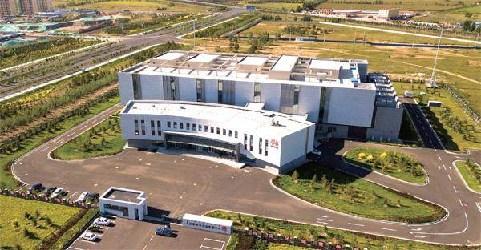

「东数西算」简介
作者：张静 - 瞭望东方周刊
内蒙古乌兰察布华为云数据中心
2022年 2 月 17 日，国家发改委等部门印发文件，同意在京津冀、长三角、粤港澳大湾区、成渝、内蒙古、贵州、甘肃、宁夏启动建设国家算力枢纽节点，并规划了 10 个国家数据中心集群。至此，「东数西算」工程全面启动。
国家发展改革委创新和高技术发展司副司长孙伟表示，这项工程要像「南水北调」「西电东送」一样，发挥我国体制机制优势，从全国角度一体化布局，优化资源配置，提升资源使用效率。
「数据资源是中国发展数字经济的最大优势。」清华大学经济管理学院党委书记、副院长陈煜波认为，「中国前瞻性布局的数字基础设施建设，能够将超大规模市场优势和人口红利转化为数据红利」。而利用好数据资源，就需要建设更有效率的「算力网」。谁在「算力网」优化升级上抢先一步，谁就能占领未来发展的制高点。
眼下，「东数西算」的相关各方正在努力形成具有中国特色的算力新格局，数字时代的「算力新版图」轮廓已现。
中国算力现状
算力有多重要？
浪潮信息联合国际权威机构 IDC 发布的《2020 全球计算力指数评估报告》显示，计算力指数平均每提高 1 个百分点，数字经济和 GDP 将分别增长 3.3‰和 1.8‰.
近些年，中国数据增量呈现爆发式增长。截至目前，我国数据中心规模已达 500 万标准机架，算力达到 130EFLOPS（每秒一万三千亿亿次浮点运算）。随着数字技术向经济社会各领域全面持续渗透，全社会对算力需求仍十分迫切，预计每年仍将以 20% 以上的速度快速增长。
西部地区可再生资源丰富、地区地质结构稳定、土地资源丰富、气候适宜、电力充足且价格相对便宜，非常适合建设数据中心。
中国信息通信研究院发布的《数据中心产业发展指数》显示，目前中国数据中心产业规模已接近 2000 亿元，北上广深等热点地区及周边数据中心规模指数较高。
但长期以来，中国的算力水平依然难以满足数据量猛增带来的巨大计算需求。其中一个重要原因是承载算力的数据中心存在供需失衡、发展失序。一些东部地区应用需求大，但能耗指标紧张、电力成本高，大规模发展数据中心难度和局限性大；而一些西部地区可再生能源丰富，气候适宜，但存在网络带宽小、跨省数据传输费用高等瓶颈，无法有效承接东部需求。
认识到布局不合理、供需不平衡的现实，中国开始推动中西部地区大数据中心建设。2015 年 7 月，首个国家级数据中心落户贵州。2016 年，乌兰察布国家大数据灾备中心启动。随后，诸多中部城市也开始建设数据中心。
据中南财经政法大学数字经济研究院执行院长、教授盘和林观察，数据中心建设过程中，一些问题显现出来：一是重复建设，在国家对大数据等数字科技的政策鼓励和倾斜下，多个城市争先建设数据中心，出现同质化的问题，区域间的协调共享比较薄弱。二是单纯数据中心居多，协同性的数据应用中心较少。
如何从全局考虑、理顺数字领域分工，避免重复性投入与资源浪费，就需要一个大工程来引领。
为什么是西部？
「东数西算」概念萌芽于 2016 年。当年 10 月，中共中央政治局在第三十六次集体学习时提出，要建设全国一体化的国家大数据中心，推进技术融合、业务融合、数据融合，实现跨层级、跨地域、跨系统、跨部门、跨业务的协同管理和服务。
2020 年 5 月，国家发改委等四部门发布《全国一体化大数据中心协同创新体系算力枢纽实施方案》提出：在京津冀、长三角、粤港澳大湾区、成渝，以及贵州、内蒙古、甘肃、宁夏等地布局建设全国一体化算力网络国家枢纽节点，发展数据中心集群，引导数据中心集约化、规模化、绿色化发展。
这标志着「东数西算」这一堪比「南水北调」「西气东输」「西电东送」的国家战略工程正式提上议事日程。
2021 年底，国家发改委等四部门复函同意在宁夏、内蒙古、甘肃、贵州启动建设全国一体化算力网络国家枢纽节点。
如何理解「东数西算」？
「『数』指的是数据，『算』指的是算力。」孙伟说，「东数西算」就是通过构建数据中心、云计算、大数据一体化的新型算力网络体系，将东部算力需求有序引导到西部，优化数据中心建设布局，促进东西部协同联动。简单地说，就是让西部的算力资源更充分地支撑东部数据的运算，更好为数字化发展赋能。
东部地区土地资源紧张、能源消耗大，在「双碳」目标下，继续在东部大规模发展数据中心不可持续。西部地区可再生资源丰富、地区地质结构稳定、土地资源丰富、气候适宜、电力充足且价格相对便宜，非常适合建设数据中心。
作为「高纬度、富能源」的典型西部城市，早在 2014 中国数据中心产业发展联盟大会的评选中，贵州贵阳、宁夏中卫和内蒙古唿和浩特就已获评「最适合投资数据中心的城市」。
在内蒙古乌兰察布，2020 年 8 月，阿里云在当地布局的超级数据中心正式对外提供云计算服务。据悉，该中心大量使用风电、光伏等清洁能源。同时，乌兰察布年均气温为 4.3 摄氏度。这意味着，数据中心每年有近 10 个月时间，可以利用自然环境实现冷却。
国家信息中心大数据发展部主任于施洋介绍，「东数西算」联合「西电东送」，在西北弃风弃光地区就近建设大型以上数据中心，既可促进清洁能源开发利用，也可降低用电损耗，进一步减少碳排放。
大力布局西部城市，无疑是在「双碳」目标下发展数字经济的又一次「中国智慧」的创新实践。
先行一步
根据定位，贵州、内蒙古、甘肃、宁夏四个节点要打造面向全国的非实时性算力保障基地，不断提升算力服务品质和利用效率，充分发挥其资源优势，夯实网络等基础保障，积极承接全国范围的后台加工、离线分析、存储备份等非实时算力需求。
乌兰察布年均气温为 4.3 摄氏度。这意味着，数据中心每年有近 10 个月时间，可以利用自然环境实现冷却。
事实上，近几年上述地区已经在建设数据中心的道路上先行一步。
2021 年贵州省 GDP 总量达到了 19586.42 亿元，其中第三产业增加值 9870.80 亿元。第三产业增加值比例最大，大数据产业的发展功不可没。
贵安华为云数据中心项目是贵安新区重点打造的 12 个大型数据中心之一，建成后作为华为全球管理数据存储中心运行，吸纳 600 至 800 位 IT 维护工程师参与维护，每年为约 1 万人提供实战培训及实习机会。
华为云营销部负责人董理斌介绍，该中心是华为云在西南区域业务的重要承载节点，其服务范围能够辐射到重庆、广西、广东、云南、四川等周边地区。「把热数据放在东部，冷数据放在西部，实现全局能效最优。」董理斌说，华为云在贵安新区和内蒙古乌兰察布布局了一南一北两大云数据中心，在上海、河北廊坊、广东东莞有 3 个核心数据中心，全部投产后可部署超过 230 万台服务器。
贵安华为云数据中心是「东数西算」的一个生动案例。在全国首个大数据综合试验区贵州，投入运营及在建的重点数据中心已达 23 个；宁夏回族自治区中卫市的西部云基地已建成亚马逊 AWS、美利云等 6 个超大型数据中心；丝绸之路经济带黄金段的重要节点城市甘肃庆阳，已吸引华为、科大讯飞、金山云等 12 家企业的数据中心落地。
2020 年印发的《甘肃省「上云用数赋智」行动方案（2020-2025 年）》提出，到 2025 年，数字经济规模总量突破 5000 亿元，成为西部「上云用数赋智」第一梯队省份。
宁夏「十四五」规划提出，把数据资源作为重要生产要素，实施数字经济新业态培育行动，推动数据存储向数据应用转变，打造西部地区重要的大数据产业园和灾备基地。
打通数字经济大动脉
专家分析，「东数西算」是我国在经济发展不平衡，资源禀赋存在差异的现实下，一次国家层面资源调配、优势互补的大布局，用数据流引领带动物资流、资金流、人才流、技术流，有助于打通东西部数字经济大动脉，形成以数据为纽带的东西部协调发展新格局。
日前，一些嗅觉敏锐的东部企业已抢先布局。注册在上海浦东的鉅成企业管理集团已经与贵州广电信息网络公司共同投资组建了东数西算（贵州）产业有限公司。
一直以来，在数字化建设进程中，东部地区显着领先于西部，因为前者兼具产业优势和人才优势。「『东数西算』战略实际上提供给西部地区一个发挥比较优势的机会，使其寻找到数字经济领域中的差异化竞争点，在完成算力供应的同时提升当地数字基础设施建设、吸引企业和专业人才入驻。」盘和林说。
「数据中心产业链条长、投资规模大、带动效应强，通过算力枢纽和数据中心集群建设，将有力带动产业上下游投资。」孙伟说。据业内人士分析，通过算力枢纽和数据中心集群建设，预计每年能带动社会投资超过 4000 亿元。
此外，西部这些数据中心集群基本上都建在各城市新区之中，这对于带动城市新区发展将是宝贵的历史机遇。这些城市新区有望从数据中心建设开始，逐步形成新型信息消费市场，实现产业与人口的集聚。
2021 年 9 月在兰州成立的国家「东数西算」产业联盟，由国家信息中心、甘肃省发改委、上海市闵行区、深圳市发改委，以及华为、腾讯、滴滴、中国移动、中国联通等知名企业和相关高等院校、科研院所共同发起成立。联盟宣言明确，甘肃省将充分发挥本地能源和算力资源优势，结合上海、深圳两地数字经济产业优势，定向承接算力需求。
盘和林分析，长远来看，「东数西算」是数字化建设全国布局的一个开始，目标是实现数字资源、数字算力、数字产业、数字服务等一系列产业的全国性布局，其中数据中心相当于底层基建。
「『东数西算』工程充分考虑各地的资源禀赋差异，最大限度降低数据获取和处理的成本，让西部城市因算力网络国家枢纽节点的定位，有机会参与到京津冀、长三角、粤港澳大湾区的大数据产业发展中来，延展东部发展空间，助力形成西部大开发新格局，让发达地区与发展中地区共同享受数字经济带来的红利。」盘和林说。